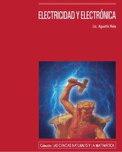
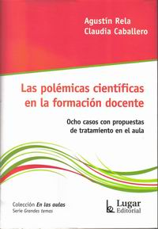
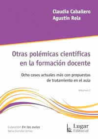
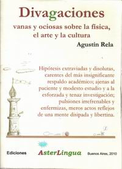
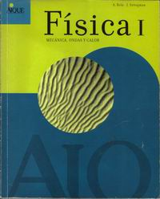
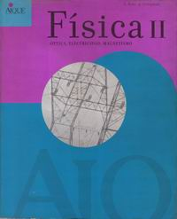
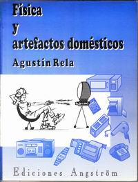

| inicio | | | física | | | divagaciones | | | anecdotario | | | epistolario | | | biografía | | | @ | |||

Electricidad y electrónica
Colección: Las Ciencias Naturales y la Matemática
Agustín Rela
Buenos Aires, 2010
Ministerio de Educación de la República Argentina, 283 páginas.
ISBN: 978-950-00-0751-1
Electricidad y electrónica
Pareciera que estuviéramos soñando: el Gobierno Argentino publicó 100.000 ejemplares de este libro para ser distribuidos por todo el país en forma gratuita y para que lleguen a las manos de todos los estudiantes y profesores que lo deseen.
Y lo que les llega a las manos es un libro excelente y original. Nada de esos textos aburridos que desanimaban casi inmediatamente, y hasta podían disuadir a los chicos más curiosos de elegir la ciencia. Electricidad y electrónica es todo lo contrario: es capaz de interesar hasta al más apático.
Los buenos profesores –y Rela lo es, sin ninguna duda– son capaces de dar una mínima base teórica, un mínimo y muy democrático formuleo… y pegar un salto al infinito lleno de maravillas, secretos, chismes, aplicaciones, curiosidades. Cualquiera sabe que entre esos primeros palotes simbólicos de la física y el desarrollo del funcionamiento del transformador hay decenas de ecuaciones con las que fatigar a los estudiantes… Para qué, si la gran mayoría no las necesita y aquellos que alguna vez las necesiten sabrán dónde encontrarlas. Rela las obvia, le basta un simple párrafo, un dibujo, un gráfico, para llegar cómodamente a explicar lo último, lo importante, lo sorprendente, la tecnología de punta, y hasta la especulación sobre el futuro.
La solidez argumental del cuerpo del texto está garantizada. Y constituye un arquetípico ejemplo de que la prosa ágil y placentera no está reñida con el rigor científico.
En las columnas laterales no faltan los cotilleos históricos, curiosos, graciosos y atractivos... además de aclaraciones auxiliares y una extensa gama de viñetas y parrafitos que son imposibles de dejar de leer.
En definitiva: no se quede sin el suyo.

Las polémicas científicas en la formación docente
Ocho casos con propuestas de tratamiento en el aula
Agustín Rela y Claudia Caballero
Buenos Aires, 2013
Lugar Editorial, 136 páginas
ISBN: 978-950-892-427-8
(por Ricardo Cabrera)
Las polémicas científicas
en la formación docente
Ocho casos con propuestas de tratamiento en el aula
La capa de ozono, biocombustibles, torres de alta tensión, qué hacer con las pilas, energías no convencionales, bolsas de plástico, cambio climático y la máquina de Dios. Esos son los ocho asuntos polémicos en los que la desinformación de la población es la característica más relevante.
Y también son cuestiones polémicas entre la comunidad científica: no hay una sola mirada y varias de ellas son francamente antagónicas entre sí. Agustín Rela y Claudia Caballero advirtieron en ellas la mejor excusa para promover el debate, estimular la curiosidad y enseñar ciencia.
El interés público sobre estos temas es palmario, por lo que no sólo a los educadores puede interesar el libro: la claridad de los planteos, el análisis de las fuentes, la justeza en la que se dimensiona cada problema le brinda al lector una visión abarcativa, ubicada, inteligente. ¿Se trata simplemente de mitos? ¿Están asociados a intereses económicos? ¿Encajan en teorías conspirativas? Estas preguntas son atendibles y requieren respuestas serias.
En este texto -de lenguaje simple, llano y entretenido- los docentes no sólo encontrarán decenas de respuestas: hallarán sobre todo una estrategia didáctica atractiva y estimulante para abordar cualquier otro asunto controversial, otra excusa apropiada para enseñar ciencia.

Otras polémicas científicas
en la formación docente
Ocho casos actuales más con propuestas de tratamiento en el aula
(por ...)
Otras polémicas científicas
en la formación docente
Ocho casos actuales más con propuestas de tratamiento en el aula
FALTA COMENTARIO

Divagaciones vanas y ociosas sobre la física,
el arte y la cultura
Agustín Rela
Buenos Aires, 2010
Aster Lingua, 125 páginas
ISBN: 978-987-23534-7-6
(por Ricardo Cabrera)
Divagaciones vanas y ociosas sobre la física,
el arte y la cultura
“Hipótesis extraviadas y disolutas, carentes del más insignificante respaldo académico; ajenas al paciente y modesto estudio y a la esforzada y tenaz investigación; pulsiones irrefrenables y enfermizas, meros actos reflejos de una mente disipada y libertina.” Así subtitula el propio Agustín esta serie de artículos breves, brillantes, ingeniosos, creativos, sorprendentes, sarcásticos, grotescos, desopilantes. Su lectura es un atentado contra el aburrimiento y la mediocridad.
De este libro se hicieron apenas 50 ejemplares, para disfrute egoísta de los allegados de Agustín. Por ese motivo estas divagaciones se transcriben casi en su totalidad en la sección divagaciones de este mismo sitio, junto con otras muchas recopiladas de aquí y de allá.

Física I,
Mecánica, ondas y calor.
Agustín Rela y Jorge Sztrajman,
Buenos Aires, 2004
AIQUE, 336 páginas + disquete.
ISBN: 950-701-508-6
(por Ricardo Cabrera)
Física 1, Mecánica, ondas y calor.
Los autores son compañeros de trabajo y amigos míos. Conocí este libro tardíamente y recién ahora puedo hacerle justicia. Tiene consistencia y nivel excelente. Apunta a un secundario sin concesiones, como debe ser. Muy apto como complemento para el ingreso universitario. No abruma con desarrollos teóricos: va al grano. Lo recomiendo efusivamente, sobre todo porque está escrito con kilos de humor, parvas de creatividad, toneladas de ingenio, y océanos de imaginación.

Física II,
Óptica, electricidad, magnetismo.
Agustín Rela y Jorge Sztrajman,
Buenos Aires, 2004
AIQUE, 352 páginas
ISBN: 950-701-522-1
(por ...)
FALTA COMENTARIO
Física II,
Óptica, electricidad, magnetismo.

Fisica Y Artefactos Domésticos
Agustín Rela
Buenos Aires, 1994
Edit Angström, 96 páginas.
ISBN:987-99785-0-1
(por...)
Fisica Y Artefactos Domésticos